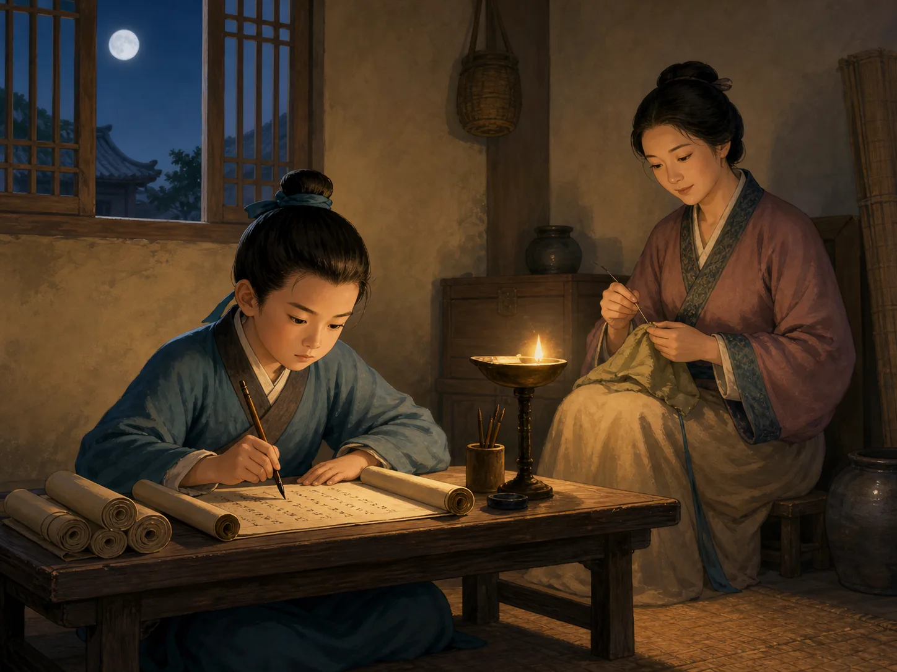
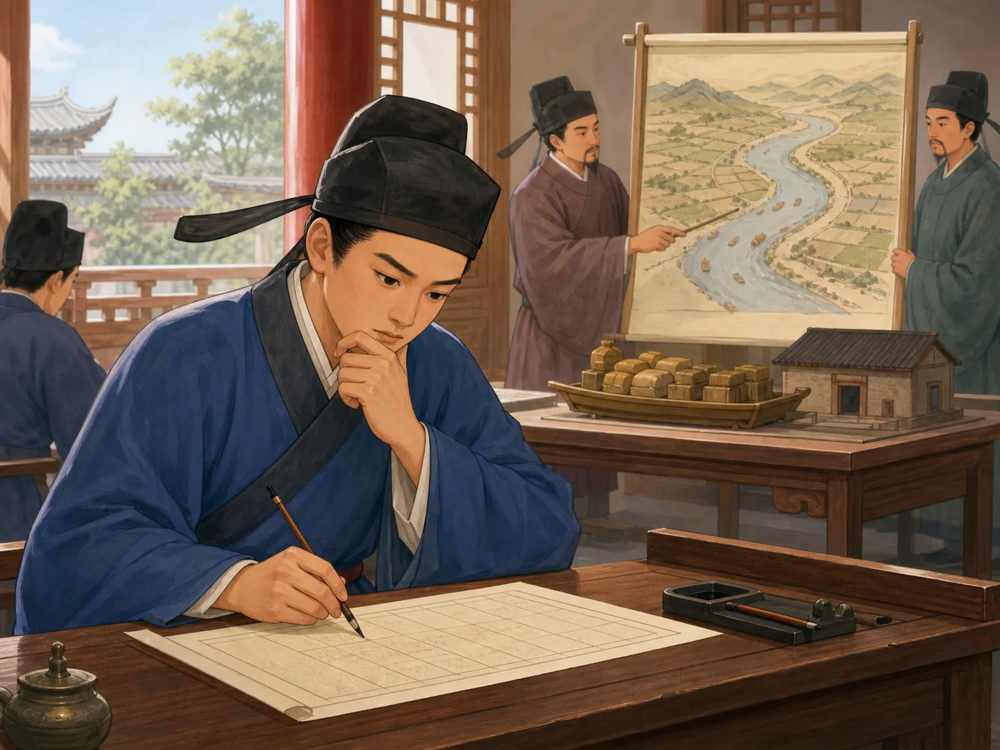
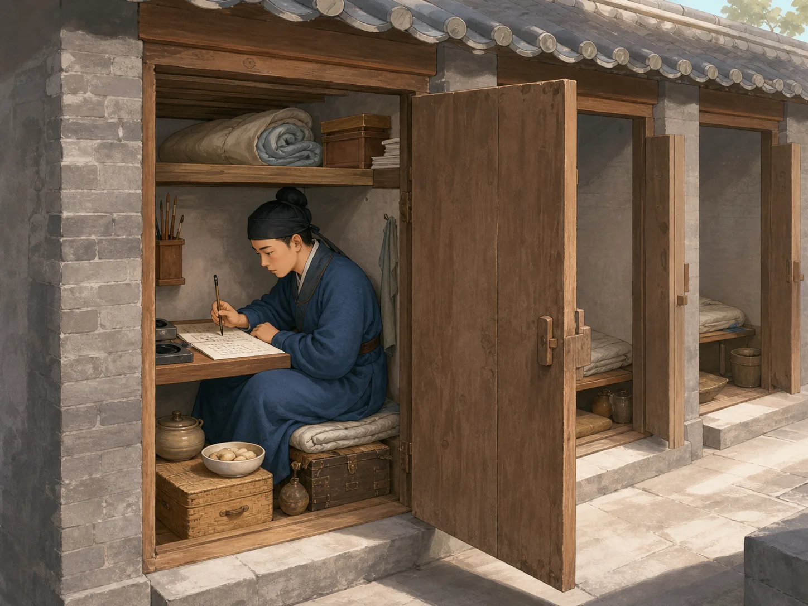

古代考试都考什么？
What Was on an Ancient Exam?
Page 1
四张不一样的考卷
Four Very Different Papers

This is a modern imagined study scene, not a real Tang candidate.
把四张古代考卷放在桌上。一张要写诗，一张要解释古书，一张要讨论政府的事情，还有一张要按照很严格的格式写文章。
它们看起来像四种考试，却都可能属于科举。科举是古代政府选官员的一条重要道路。它存在了很久，题目却不是永远一样。
朝代变了，考试等级和科目不同，考卷也会改变。
Place four old exam papers on a table. One asks for a poem. One asks the writer to explain an old book. One asks about government. Another requires an essay with very strict rules.
They look like four different tests, but all could belong to China's imperial examination system. The exams were an important road into government. They lasted for many centuries, but the questions did not stay the same.
Different dynasties, levels, and subjects brought different papers.
Page 2
有时写诗，有时谈治理
Sometimes Poetry, Sometimes Government

This is a modern imagined scene. The map and question are not from a real exam.
唐代有好几种考试。有的考古代经典，有的考法律或计算。很有名的进士科也会改变。它曾经重视怎样处理政事的问题，后来诗和赋变得更重要。
宋代有一次大改革。考试不再考诗赋，改考解释经典、写文章和讨论政事。后来规则又发生变化。
写诗和讨论政府都需要认真阅读、思考和表达。改变题目，也会改变学生多年练习的方向。
The A powerful and creative time in China about 1,300 years ago. had several kinds of exams. Some focused on ancient classics. Others tested law or calculation. The famous jinshi exam changed too. Questions about government mattered early, while poetry and fu became more important later.
During the A time in China about 1,000 years ago., one major reform removed poetry and fu from that exam and gave more space to explaining classics, writing essays, and discussing government. Later, the rules changed again.
Both poetry and government writing required reading, thought, and skill. When officials changed the questions, students had to change what they practiced for years.
Page 3
严格文章不是全部
The Strict Essay Was Not the Whole Test
明清科举常让人想到八股文。这种文章有很严格的结构。考生要熟悉经典，也要很会安排文字。它限制很多，却不是只要背一篇范文就能写好。
更重要的是，大型考试通常分成好几场。除了经典文章，还可能有公文、判案、政事问题和诗。
所以，考生面对的不是一张从头到尾只有八股文的卷子。
The A time in China from 1368 to 1644. and China's last imperial dynasty, from 1644 to 1912. exams are often remembered for the eight-legged essay. This essay followed strict rules. Writers needed deep knowledge of the classics and great control of language. It was narrow, but it was not easy.
Major exams usually had several sessions. Other parts could include official writing, legal decisions, government questions, and poetry.
A candidate did not spend the entire examination writing only one kind of strict essay.
Page 4
小小号舍里的三天
Three Days in a Tiny Cell

This is a modern imagined exam cell. Its size and conditions varied by place and time.
明清的大考场里，有一排排很小的号舍。考生在里面写字、吃饭和休息。一次考试可能有三场，每一场大约三天。
这不表示整个科举只要三天。考生要先通过前面的考试，等下一场，还可能走很远的路。
大家拿到相同的考卷，也不代表机会完全一样。有人有好老师和足够的钱，有人没有；有人还不能参加。考卷能看见一些能力，却看不见一个人的全部。
Large Ming and Qing exam grounds held rows of tiny cells. Candidates wrote, ate, and rested inside them. One exam could have three sessions, with each session lasting about three days.
That did not make the whole examination journey three days long. Candidates had to pass earlier levels, wait for the next exam, and sometimes travel a great distance.
The same paper did not give everyone the same chance. Some people had teachers and money; others did not. Many people were not allowed to enter at all. A test can show some skills, but it cannot see a whole person.
出题也是一种选择
Choosing Questions Means Choosing Skills
科举没有一张一千年不变的试卷。题目一变，学校教什么、学生练什么，也会改变。
每一种考试都在回答一个问题：我们觉得什么知识最重要？
考试可以有共同规则，却不能自动带来完全相同的机会，也不能告诉我们谁最善良或最勇敢。
There was no imperial exam paper that stayed the same for a thousand years. When the questions changed, teaching and practice changed too.
Every exam quietly answers a question: Which knowledge and skills matter most to us?
A test can create common rules. It cannot automatically create equal chances, and it cannot tell us who is kindest or bravest.
科举试卷为什么一直在变？
Why Did Imperial Exam Questions Keep Changing?
Page 1
唐代：诗很重要，却不是全部
A powerful and creative time in China about 1,300 years ago.: Poetry Mattered, but It Was Not Everything
This is a modern imagined study scene, not the life of a documented candidate.
如果把唐、宋、明、清的考卷放在一起，一张要写诗，一张要解释经典，一张讨论政府，还有一张要求严格格式。它们可能都属于科举。科举不是一场千年不变的“古代高考”。
唐代有不同考试科目。明经科重视经典，还有法律、计算等专门科目。很受重视的进士科也不断改变：早期政事策问重要，后来诗和赋越来越突出，但经典和策问并没有一下消失。
考试诗有题目、韵脚和格式限制。它不是随心写诗。考生要熟悉文学传统，也要在压力下组织语言。诗赋和策问训练的重点不同，却都需要阅读、判断和写作能力。
Put Tang, Song, Ming, and Qing exam papers side by side. One asks for poetry, another for an explanation of a classic, another for ideas about government, and another for an essay under strict rules. All may belong to the imperial examinations. This was not one “ancient national test” frozen for a thousand years.
The Tang offered different exam categories. Some emphasized the classics; specialized categories tested law or calculation. The admired jinshi exam also changed. Policy questions mattered early, while poetry and fu became especially important later. Classics and policy did not vanish overnight.
Examination poetry came with assigned topics, rhymes, and forms. It was not free writing. Candidates needed literary knowledge and the ability to shape language under pressure. Poetry and policy responses trained different skills, but both demanded reading, judgment, and craft.
Page 2
宋代：换题，也在换训练方向
A time in China about 1,000 years ago.: New Questions, New Training
This imagined scene does not reconstruct the map, officials, or question from a real exam.
北宋初年的进士考试仍有诗赋，也考文章、政事回答和经典。1071年，王安石推动改革，取消进士科的诗赋，改为经义、论和策。经义要求根据题目解释经典；策要求讨论治理。
改革者希望新的题型让学生更认真理解经典和政府。反对者担心评分未必更可靠，新题型也会产生新套路。后来诗赋一度恢复，规则继续变化。
这不是从“漂亮诗句”走向“真正思考”的简单进步。每种写作都需要思考。当政府换题，学校课程、老师讲法和考生多年的练习也要跟着改变。
Early Northern Song jinshi exams still included poetry and fu, along with essays, policy responses, and the classics. In 1071, reformers led by Wang Anshi removed poetry and fu and emphasized classical interpretation, essays, and government questions.
Reformers hoped the new subjects would deepen the study of texts and government. Critics doubted that scoring would become more reliable and warned that new forms could produce new tricks. Poetry and fu later returned for a time, and the rules kept moving.
This was not a simple step from “pretty poems” to “real thinking.” Every form demanded thought. When the government changed an exam, lessons, teaching, and years of preparation changed with it.
Page 3
明清：八股文只是一部分
A time in China from 1368 to 1644. and China's last imperial dynasty, from 1644 to 1912.: More Than One Essay
八股文从《四书》《五经》出题，后来有很严格的结构和对偶规则。它限制很窄，也受到批评；不过，写好并不只是背范文，还需要长期训练、仔细阅读和语言控制。
明代乡试和会试通常分三场。第一场重经典文章，后面还可能有论、公文、判语和策问。清代大体沿用，又在1757年把试帖诗正式加入重要考试。
所以，明清考生并不是从头到尾只写八股文。一个共同标准让许多人可以比较，也同时限制了表达方式。
The eight-legged essay drew questions from the Four Books and Five Classics and developed strict rules for structure and paired language. It was narrow and often criticized. Still, a strong answer required more than memorizing a model. It demanded long practice, close reading, and remarkable control of language.
Ming provincial and metropolitan exams normally had three sessions. The first emphasized classical essays, while later sessions could include other essays, official documents, legal judgments, and policy questions. The Qing kept a broadly similar system and made regulated examination poetry a permanent major subject in 1757.
Candidates did not write eight-legged essays from beginning to end. A common form made comparison possible, but it also narrowed what writers could say.
Page 4
一场三天，整条路却很长
A Three-Day Session on a Much Longer Road
This is a modern imagined exam cell. Size, equipment, and conditions varied.
明清大型贡院里有一排排号舍。考生在狭窄空间中写字、吃饭和休息，木板可以当桌子，也可以拼成睡铺。
清代会试三场分别在不同日期开始。考生通常提前一天入场，交卷后离开，每场大约三天。“三天两夜”说的是一场，不是整个科举。考生还要取得前一级资格，等待三年一次的考试，长途赶考，通过会试后才能参加殿试。
天气、疾病和长时间写作也在考验身体。考卷相同，不表示每个人来到考卷前的路一样：家庭、老师、钱、旅行和健康都会影响机会。
Large Ming and Qing examination compounds held row after row of small cells. Candidates wrote, ate, and rested in cramped spaces. Wooden boards could serve as a desk and later become a sleeping platform.
In a Qing metropolitan exam, three sessions began on separate dates. Candidates usually entered a day early and left after submitting work the following day, making each session about three days. “Three days and two nights” describes one session, not the whole system. Candidates first had to qualify, wait for exams held on a cycle, travel, and pass earlier levels.
Weather, sickness, cramped space, and long hours tested the body too. Identical papers did not mean identical roads to the exam. Family support, teachers, money, travel, and health all shaped opportunity.
Page 5
一张考卷也是一张选择表
Every Exam Paper Makes Choices
唐代重视诗赋，选择了一种文学能力；宋代改变题型，重新讨论经典、教育与治理；明清规定文章格式，建立共同标准，也压窄表达。
科举让考试成绩成为进入官僚体系的一条主要道路，也用匿名、誊录等办法减少舞弊。但它没有让所有人站在相同起点，也不能测出谁最善良、勇敢，或最能解决未来的难题。
“考什么”背后还有一个问题：我们认为什么知识重要，又愿意把什么样的人送到下一扇门前？
Tang examiners who valued poetry highlighted one kind of literary achievement. Song reformers reopened a debate about classics, education, and government. Ming and Qing officials used strict forms to create common standards, while also narrowing expression.
The examinations made written performance a major road into government and used methods such as hiding names and copying papers to reduce cheating. They never gave everyone the same starting point, and they could not measure who was kindest, bravest, or best prepared for a problem no examiner had imagined.
Behind “What did the test ask?” is another question: Which knowledge do we value, and whom do we allow through the next door?
没有一张千年考卷
No Exam Stayed the Same for a Thousand Years
唐代进士科越来越重视诗赋；宋代改革者改用经义、论和策；明清八股文很重要，却只是多场考试的一部分。题型改变，学习方向也改变。
考试能建立共同规则，却不能自动带来平等机会，也看不见一个人的所有能力。读懂科举，就是读懂政府每次出题时做出的选择。
Tang jinshi exams came to emphasize poetry and fu. Song reformers turned toward classical interpretation, essays, and policy responses. Ming and Qing eight-legged essays mattered, but they formed only part of a multi-session test. When questions changed, education changed too.
An exam can create common rules. It cannot automatically create equal opportunity or see every human ability. Understanding the imperial exams means noticing the choices a government made each time it wrote the questions.
科举到底考什么？一张考卷的千年变化
What Did the Imperial Exams Test? A Thousand Years of Changing Questions
Page 1
唐代：进士科有诗，也不只有诗
A powerful and creative time in China about 1,300 years ago.: The Jinshi Exam Included Poetry, but Not Only Poetry
A modern imagined scene of a boy practicing writing by lamplight, not a record of a real Tang candidate.
如果把唐、宋、明、清四个时代的考卷摆在桌上，你可能会以为它们来自四种考试：一张要写诗，一张要解释经典，一张讨论国家事务，还有一张必须按照严格格式写文章。其实，它们都可能属于科举。科举不是一场从古到今都相同的“古代高考”；朝代、考试等级和科目不同，试卷也不同。
先看图中的少年。这是现代画家想象的读书场景，不是一位真实考生留下的记录。我们不知道某个贫穷孩子是否真由缝衣的母亲供读，也不能说他进入长安考场后，第一题一定是写诗。
唐代有许多考试科目。明经科偏重儒家经典，另外还有明法、明算等专门科目，分别考法律或计算知识。最受推崇的进士科也不断变化：早期很重视回答政事问题的“策”，后来诗和赋越来越重要，但经典知识和策问并没有完全消失。
考试诗也不是随心写一首喜欢的诗。它有题目、韵脚和格式等限制，要让考官看见考生熟悉文学传统，也能在压力下组织语言。一首合格的诗需要文采、记忆、判断和技术；策问同样需要写作功夫。把两者说成“诗只考漂亮，策只考思考”，反而看不见两种写作有多难。
Imagine placing four exam papers on a table, one each from the Tang, Song, Ming, and Qing dynasties. One asks for poetry. Another asks the student to explain a classic. A third discusses government, while a fourth demands a tightly controlled essay. They may look like four different tests, yet every one could have belonged to China’s imperial examination system. The system was not one ancient test that stayed the same forever; its questions depended on the dynasty, exam level, and subject category.
Look at the boy in the picture. This is a modern artist’s imagined study scene, not a record of one real candidate. We do not know that a particular poor boy was supported by a sewing mother, and we cannot say that the first question he saw in Chang’an was always “Write a poem.”
The Tang dynasty had several examination categories. The mingjing category emphasized the Confucian classics. Specialized categories tested subjects such as law and calculation. The admired jinshi exam changed over time. Policy questions were important early on. Poetry and rhyme-prose, called fu, grew more important later, but questions on the classics and government did not simply vanish.
An examination poem was not a chance to write anything you pleased. Its topic, rhyme, and form could all be restricted. A candidate had to show knowledge of a literary tradition and organize language under pressure. A successful poem required memory, judgment, and technique as well as style. A policy response also required careful writing. Saying “poetry tested beauty while policy tested thinking” misses how demanding both forms could be.
Page 2
宋代：换题型，也是在争论怎样选人
A time in China about 1,000 years ago.: Changing the Question Meant Changing the Kind of Official
A modern imagined candidate considering a government problem; the officials, map, and question do not reconstruct a documented Song exam.
到了北宋，进士考试起初仍会考诗赋，也会考论、策和经典知识。1071年，宋神宗时期的王安石推动改革，取消进士科的诗赋考试，改用经义、论和策。经义不是把经书原句抄下来，而是根据题目解释经典的意思；策则要求考生讨论治理问题。
旧故事里那些“黄河决口怎么办”“边境粮食怎么运”的题目很生动，却不是我们查到的真实考题，所以不能装进历史考卷。真正重要的是：改革者认为，新的题型能让考生更认真地理解经典和政治；反对者却担心，评分未必更可靠，新格式也可能很快产生新的套路。后来诗赋一度恢复，考试办法继续变动。
因此，宋代不是从“只会写诗”突然进步到“终于会解决问题”。诗赋、经义和策论都要求阅读、论证与表达，只是训练的重点不同。每当朝廷改变题型，书院里的课程、老师的讲法和考生多年的练习也会跟着改变。
In the early Northern Song, the jinshi examination still included poetry and fu, along with essays, policy responses, and knowledge of the classics. Then, in 1071, reformers led by Wang Anshi changed the system under Emperor Shenzong. Poetry and fu were removed from the jinshi exam, while classical interpretation, essays, and policy responses received new weight. Classical interpretation required a candidate to explain a passage, not merely copy it, while a policy response discussed matters of government.
An older version of this story invented vivid questions about a Yellow River flood, border supplies, and confused taxes. We could not trace those examples to real examination papers, so they do not belong in a historical scene. The real debate is more interesting. Reformers believed the new subjects could lead students toward deeper understanding of the classics and government. Critics worried that judging the answers might not be more reliable and that any new form could soon produce new tricks. Poetry and fu later returned for a time, and the rules continued to shift.
The Song story is not a simple march from “pretty poems” to “real problem-solving.” Poetry, classical interpretation, and policy writing all required reading, argument, and expression, but trained those skills differently. Whenever the court changed the exam, school lessons, teachers’ explanations, and years of student practice had to change with it.
Page 3
明清：严格的文章，只是三场考试的一部分
A time in China from 1368 to 1644. and China's last imperial dynasty, from 1644 to 1912.: The Strict Essay Was Only Part of the Test
明清科举常让人想到八股文。它从《四书》《五经》中出题，后来形成开头、展开、成对论说等严格规则。考生要熟记经典和注释，扣紧题意，在有限篇幅中安排结构与对偶。这种文章限制很多，也受到不少批评；可是把它说成“只要背范文就行”也不准确。写好它需要长期训练、精细阅读和很强的语言控制，只是这些能力被放进了一个非常窄的框架。
更容易被忽略的是，明代乡试和会试通常分三场。首场重视《四书》《五经》文章，后两场还可能考论、诏表等公文体、判语和策问。清代沿用了大体相近的制度，又在1757年把试帖诗正式加入重要考试。换句话说，一个明清考生面对的并不是一张从头到尾只有八股文的卷子。
People often connect the Ming and Qing exams with the eight-legged essay. Its questions came from the Four Books and Five Classics, and over time it developed tightly controlled sections, turns, and paired arguments. A candidate had to know the classics and approved commentaries, stay close to the question, and balance structure and parallel language within a limited space. The form was narrow and received serious criticism. Yet it is misleading to say that students only had to memorize a model. Writing a strong essay required years of practice, close reading, and extraordinary control of language. The problem was not that no thinking occurred. It was that so much skill had to fit inside one approved frame.
There is another surprise. Ming provincial and metropolitan examinations normally had three sessions. The first focused on writing about the Four Books and Five Classics. Later sessions could include essays, official-style documents, legal judgments, and policy questions. The Qing kept a broadly similar system, and in 1757 regulated examination poetry became an established part of major exams. A Ming or Qing candidate did not face one long paper filled only with eight-legged essays.
Page 4
号舍里的三天，不是整个科举只有三天
Three Days in a Cell Did Not Mean the Whole System Lasted Three Days
A modern imagined candidate in an examination cell; cell size, equipment, and conditions varied by time and place.
图中的考生坐在狭窄号舍里，身边放着食物和铺盖。这也是现代想象图，不过它抓住了一件真实的事：在明清大型贡院里，许多考生确实在一间间号舍中答题、吃饭和休息，木板可以当桌面，也可以拼成睡铺。
“三天两夜”需要说清楚。以清代会试为例，初九、十二、十五日各开一场，考生通常提前一天入场，后一日交卷离场，所以是每场约三日，而不是整套科举只考三天。乡试和会试通常三年举行一次，考生还要先取得参加上一层考试的资格；通过会试后，才有机会参加皇帝主持名义下的殿试。不同朝代、地区和考试等级的安排并不完全相同，不能把一座贡院的一次经历当成所有科举的样子。
狭窄、天气、疾病和长时间写作都会考验身体。可号舍也提醒我们：考试测到的不只是卷面知识，还会混入家庭能否供读、考生是否有好老师、能否长途赶考，以及身体能否撑过考场等条件。试卷看起来一样，并不表示每个人走到试卷前的路一样长。
In the picture, a candidate sits inside a narrow examination cell with food and bedding nearby. This is another modern imagined scene, but it captures something real. In the great Ming and Qing examination compounds, many candidates did write, eat, and rest in rows of small cells. Wooden boards could serve as a desk and be rearranged into a sleeping platform.
The phrase “three days and two nights” needs an explanation. In a Qing metropolitan examination, for example, the three sessions began on the ninth, twelfth, and fifteenth days of the month. Candidates usually entered a day before each session and left after submitting their work the following day. That made each session about three days. It did not mean that the entire road through the examination system lasted only three days. Provincial and metropolitan exams were normally held on a three-year cycle, and candidates had to earn the right to enter each higher stage. Only after passing the metropolitan examination could they continue to the palace examination. Details varied by dynasty, region, and level.
Cold, heat, sickness, cramped space, and hours of writing could test the body as well as the mind. The cells also remind us of something a paper cannot show. A candidate’s chances depended partly on family support, good teachers, long-distance travel, and the strength to endure the exam. The papers might look the same, but the roads that brought students to them were not equally long.
Page 5
一张考卷，其实是一张选择表
An Exam Paper Is Also a List of Choices
现在再看桌上的几张卷子。唐代进士科加入诗赋，是在挑选一种受重视的文学能力；宋代改考经义、论、策，是在重新讨论经典、教育与治理的关系；明清把文章格式细细规定，是想让许多考生在共同标准下竞争，却也压窄了可以表达的方式。
科举的重要改变，是让考试成绩成为进入官僚体系的一条主要道路，并发展出匿名、誊录等减少舞弊的办法。但它从未让所有人站在完全相同的起点，也从未用一张卷子测出一个人的全部能力。它能选出擅长某种阅读与写作的人，却未必能回答谁最善良、最勇敢，或最会处理未来真正发生的难题。
所以，“科举考什么”不只是一个历史知识题。每一种考试都在悄悄回答另一个问题：我们认为什么知识最重要，又愿意把什么样的人送到下一扇门前？
Now look again at the papers on the table. When Tang examiners valued poetry and fu, they highlighted one kind of literary achievement. When Song reformers turned toward classical interpretation, essays, and policy responses, they reopened a debate about texts, education, and government. When Ming and Qing officials regulated essay form in great detail, they created a common standard for many candidates, but they also narrowed the ways those candidates could speak.
The examination system made performance on written tests a major road into government. It also developed methods such as hiding candidates’ names and having copies made of papers to reduce favoritism and cheating. Even so, the exams never gave everyone an equal starting point, and no paper could measure a whole person. A test might find people skilled in certain kinds of reading and writing. It could not fully reveal who was kindest, bravest, or best able to handle a problem that no examiner had imagined.
That is why “What did the imperial exams test?” is more than a history question. Every exam quietly answers another question too: Which kinds of knowledge do we value most, and who gets to pass through the next door?
小结
In Summary
科举没有一张千年不变的考卷。唐代的进士科曾越来越重视诗赋；北宋改革者改用经义、论和策；明清的八股文很重要，却只是多场考试中的一部分。题型一变，学生学习的方向也会跟着变。
考试能建立共同规则，却不能自动带来完全相同的机会，也不能看见一个人的所有能力。读懂科举，就是读懂古代政府每次出题时做出的选择。
There was no single imperial exam paper that remained unchanged for a thousand years. Tang jinshi exams came to emphasize poetry and fu. Northern Song reformers turned toward classical interpretation, essays, and policy responses. The Ming and Qing eight-legged essay was important, but it was only one part of a multi-session exam. When questions changed, the direction of education changed too.
An exam can create common rules, but it cannot automatically create equal opportunity or see every human ability. To understand the imperial exams is to understand the choices a government made whenever it wrote the questions.